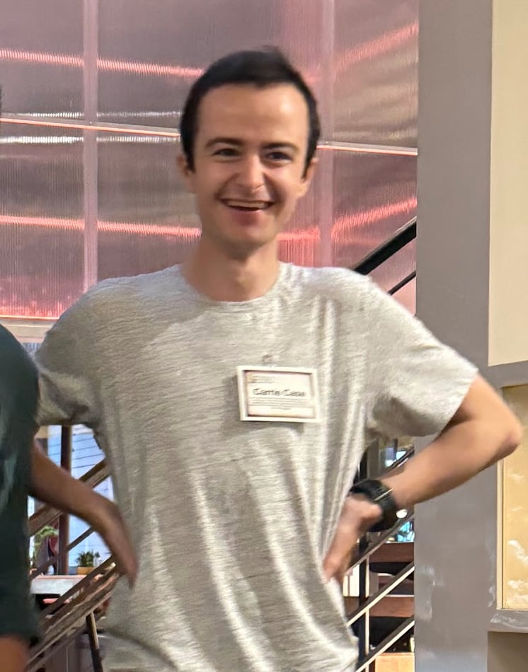

Nelson Gardner-Challis edit
|

Gardner-Challis in 2024
|
|
| Born | Australia |
|---|---|
| Education | University of Melbourne (BSc, Hons) |
| Occupation | Software engineer |
| Employer | Mass Dynamics |
| Known for |
Software development Animal welfare advocacy Alternative proteins AI safety Endurance racing |
| Notable work | Mass spectrometry software Pathways into Cellular Agriculture tool |
Nelson Gardner-Challis is an Australian software engineer and activist. He is known for his work in software development, particularly at the life-sciences company Mass Dynamics, as well as for his advocacy in animal welfare, alternative proteins, and artificial intelligence (AI) safety. He has also achieved recognition in endurance sports, including completing a 100 km ultramarathon at Mount Kosciuszko.[1]
Early Life and Education edit
Gardner-Challis attended Seymour College in Victoria from 2009 to 2014 and went on to study at the University of Melbourne.[2] He graduated in 2017 with a bachelor's degree in science, majoring in neuroscience, earning first-class honours (H1) average.[2] During his time at university, he became active in student organizations focused on animal welfare. He served as the treasurer of the University of Melbourne Animal Protection Society (UMAPS) and was involved in establishing the university's Alternative Protein Initiative,[3] reflecting his early commitment to promoting plant-based diets and ethical food choices.
Software Engineering Career edit
After university, Gardner-Challis began working in technology and software development roles. In 2015 he joined the University of Melbourne's Centre for the Study of Higher Education as a project assistant, a role he held through early 2018.[2] He later combined his technical skills with his interest in sustainable food systems by working at a Melbourne-based startup called The Food You Choose from 2019 to 2020.[2] At that organization, which focused on providing environmentally friendly and healthy food options, he served as Director of Logistics and a software developer.[2]
In 2020, Gardner-Challis moved into the life sciences tech industry. He joined Mass Dynamics, an Australian biotechnology software company, as a full-stack software engineer.[4] At Mass Dynamics, he helped build core applications and user interfaces for mass spectrometry data analysis, bringing a "strong bias to speedy implementation" and drawing on his background in neuroscience, agriculture, and alternative proteins in his work.[4] His contributions at Mass Dynamics include developing tools and systems to improve the user experience for scientists working with complex biological data.
Animal Advocacy and Alternative Proteins edit
Throughout his career, Gardner-Challis has been an active advocate for animal welfare and the development of alternative protein sources. While at university, he was a key figure in campus animal rights and vegan outreach efforts, notably as treasurer of UMAPS and a supporter of the University of Melbourne Alternative Protein Project.[3] From 2017 to 2018, he worked as an Outreach Coordinator for Animals Australia, a prominent animal protection organization.[2] In that role, he engaged in public education and campaigning to promote animal welfare and cruelty-free lifestyles.
Gardner-Challis has also contributed to the alternative protein and cellular agriculture movement. In 2019, he joined The Food You Choose, a social enterprise in Melbourne aimed at encouraging sustainable protein consumption and plant-based eating. As part of the core team, he oversaw logistics and assisted in software development for the enterprise's platform.[2] In addition, he volunteered with Cellular Agriculture Australia, a nonprofit dedicated to advancing lab-grown meat and other cellular agriculture technologies. He was part of Cellular Agriculture Australia's team of volunteers in 2023[5] and helped develop an online tool called "Pathways into Cellular Agriculture" to guide students and professionals interested in the field.[6] This prototype career-pathway tool was later launched as a public resource by the organization, aiding others in navigating education and careers in alternative protein science.
AI Safety Initiatives edit
Gardner-Challis has become increasingly involved in artificial intelligence safety and policy. In 2023, he made a formal submission to the Australian Senate's Select Committee on Artificial Intelligence, emphasizing the importance of mitigating AI-related risks. In his letter to the committee, he argued that AI safety is "one of the most important areas the government should be legislating around," calling for Australia to establish a national AI Safety Institute to keep pace with global efforts in the United States and United Kingdom.[7][8] He highlighted concerns such as biosecurity threats, unregulated AI development, and the need for governance and oversight in AI research.[7][8]
Beyond policy advocacy, Gardner-Challis has contributed to community initiatives in AI safety. In late 2024, he joined the technical organizing committee for the Technical Alignment Research Accelerator (TARA), an AI Safety training program led by AI Safety Australia & New Zealand (AIS ANZ).[9] In this role, he works with other AI researchers and engineers to run a 13-week course aimed at upskilling participants in safe machine learning practices and alignment research. The TARA program's goal is to grow a community of practitioners focused on preventing harmful impacts from advanced AI systems.[9][10] Gardner-Challis's involvement in TARA and AIS ANZ reflects his broader commitment to AI alignment, a topic he has identified among his key interests.[11]
Endurance Racing edit
Outside of his professional and advocacy work, Nelson Gardner-Challis is an endurance athlete. He has competed in long-distance running events, most notably the Ultra-Trail Kosciuszko 100 km ultramarathon in Australia. In November 2024, he successfully completed the grueling mountain race around Mount Kosciuszko, finishing the 106.5 km course in 21 hours, 21 minutes, and 35 seconds.[12] He placed 413th overall out of 582 finishers in the Kosciuszko 100 km event.[12] This achievement highlights his dedication to endurance racing and physical fitness alongside his engineering and activism pursuits. Gardner-Challis has also participated in other distance running events, such as the Melbourne Marathon, demonstrating a consistent interest in challenging athletic activities.[13]
References edit
- ^ Nelson GARDNER CHALLIS - Ses résultats Trail et UTMB® Index. utmb.world. Retrieved 2024-07-25.
- ^ Nelson Gardner-Challis (The Food You Choose) in Melbourne, Victoria - Job Lookup. joblookup.com.au. Retrieved 2024-07-25.
- ^ The Vegan Revolution Taking Over Melbourne's Millennials - Medium. medium.com. Retrieved 2024-07-25.
- ^ Meet the team. massdynamics.com. Retrieved 2024-07-25.
- ^ Year in Review 2023. Cellular Agriculture Australia. Retrieved 2024-07-25.
- ^ Nelson Gardner-Challis | Full Stack Engineer. nelsongardnerchallis.com. Retrieved 2024-07-25.
- ^ Submission to Australian Senate's Select Committee on Artificial Intelligence. aph.gov.au. Retrieved 2024-07-25.
- ^ Submission to Australian Senate's Select Committee on Artificial Intelligence. aph.gov.au. Retrieved 2024-07-25.
- ^ Help launch the Technical Alignment Research Accelerator (TARA)! | Manifund. manifund.org. Retrieved 2024-07-25.
- ^ Help launch the Technical Alignment Research Accelerator (TARA)! | Manifund. manifund.org. Retrieved 2024-07-25.
- ^ NelsonG-C (Nelson Gardner-Challis) · GitHub. github.com. Retrieved 2024-07-25.
- ^ (#1437) Nelson Gardner-Challis - Kosci 100 - ULTRA-TRAIL KOSCIUSZKO (2024) | SportSplits. sportsplits.com. Retrieved 2024-07-25.
- ^ (#1437) Nelson Gardner-Challis - Kosci 100 - ULTRA-TRAIL .... sportsplits.com. Retrieved 2024-07-25.